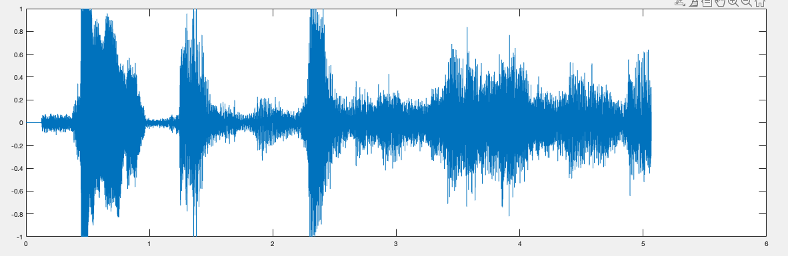

Filtrage
Comme on peut le constater sur l'image suivante un signal PDM à une fréquence d'échantillonnage beaucoup plus importante qu'un signal PCM.

Réaliser une décimation pour réduire cette fréquence et convertire notre signal PCM permet d'obtenir un signal audible mais pas parfait. Dans un premier temps on peut constater qu'il y aura une perte de certaine information, mais le principale problème problème et la conservation de certaine de c'est haute fréquence qui peuvent causer du bruit ou encore une qualité type talki-walki.
L'objectif de cette partie consiste donc à obtenir un signal de meilleur qualité, mais pour ce faire il est important de comprendre correctement les étapes pour procéder au filtrage à l'aide de Matlab.
Les effets d'un signal PDM
C'est étapes ne sera pas dirrectement lié à notre projet, nous allons partir d'un enregistrement audio et nous allons le convertir en PDM pour comprendre les effets de cette modulation et comment les réduires.
Lecture d'un signal audio
Dans un premier temps nous devons lire ce signal audio puis l'analyer ça représentation temporelle. On pourra également extraires certaines données essentiel qui pourront nous servire pour la suite.
[x, fs] = audioread('bond.wav');
Ts = 1/fs;
N = length(x);
t = [0:Ts:(N-1)*Ts];
duree = N/fs

Conversion du signal audio vers un signal PDM
Dans un premier temps nous devons réechantilloner notre signal. La fréquence actuel ne correspond pas à celle que l'on utilise dans notre projet, une fréquence de 3.072MHz.
fs_new = 3.072e6;
x_resampled = resample(x, fs_new, fs);
Une fois qu'on a la bonne fréquence on peut réalisé une modulation PDM à l'aide d'une fonction que nous avons réalisé, cette fonction est inspiré de l'algorithme donné par Wikipédia. Ce qui nous permettra par la suite d'afficher sa représentation temporelle et fréquentielle.
function result = modulation_PDM(s, qe)
s_mod = zeros(1, length(s));
for i = 1:length(s)
qe = qe + s(i);
if qe > 0
s_mod(i) = 1;
else
s_mod(i) = -1;
end
qe = qe - s_mod(i);
end
result = s_mod;
end
x_mod = modulation_PDM(x_resampled, 0);

- Orange → Signal PDM
- Bleu → Signal Audio suréchantillonnée
On remarque facilement que le signal PDM à mojoritairement des hautes fréquences comparé au signal audio suréchantillonnée. De plus on ne reconnais même plus notre allure temporelle que nous avions précédement.
Traitement du signal PDM
Dans notre pojet, nous avons utilisé une décimation pour réaliser la conversion PDM → PCM. Ici on va optimiser ce procéssus que nous avons simplifié à l'aide d'un filtre passe bas. On remarque au final que nous allons réaliser ce qui est préconiser par STM (cf conversion). Le résultat est similaire, si nous avions réaliser la même procédure sur le STM32, on aurait également pu obtenir notre signal PCM. L'avantage est que ici nous allons pouvoir constaté les effets négatifs de la modulation PDM.
Pour ce faire, on va utiliser filtre passe-bas à moyenne glissante sur 64 points ainsi que d'un sous échantillonnage avec un facteur de 64, ce qui correspond également au facteur décimation que nous avons utiliser dans notre projet.
$$ \frac{3.072MHz}{64} = 48kHz$$
On procède donc au filtrage de la manière suivante:
nb_points = 64;
ech_factor = 64;
filtre = ones(1, nb_points)/ech_factor;
x_filtered = filter(filtre, 1, x_mod);

- Orange → Signal PDM traité
- Bleu → Signal Audio
Grâce au filtre nous avons retrouvé l'allure de notre signal audio, mais la représentation fréquencielle démontre que nous avons toujours une présence importante des hautes fréquences. Comme expliqué plusôt, c'est les hautes fréquences obtenus à la suite de notre décimation qui réduise la qualité de notre signal. On constante donc que c'est dernière sont belle et bien présente, l'objectif va donc être de les filtrés.
Filtrage d'un signal PDM
A présent l'objectif est donc de supprimer les composantes fréquentielles haute-fréquence du signal. Pour ce faire nous allons utiliser un filtre passe-bas.
Design du filtre
Nous allons utiliser les données précedement obtenus suite aux annalyse pour designer notre filtre à l'aide de l'outil Matlab: filterDesigner

Cette outil nous aide dans la création du filtre pour vérifier si nos paramètre sont bon, mais également pour génerer le code associé. Ce code nous permettra de filtrer notre signal PDM
function coeffs_fir = createFIRFilter
Fs = 48000;
Fpass = 5000;
Fstop = 6000;
Dpass = 0.057501127785;
Dstop = 0.1;
dens = 20;
[N, Fo, Ao, W] = firpmord([Fpass, Fstop]/(Fs/2), [1 0], [Dpass, Dstop]);
b = firpm(N, Fo, Ao, W, {dens});
Hd = dfilt.dffir(b);
coeffs_fir=Hd.Numerator;
Utilisation du filtre
Le principe est le même qu'avec le premier filtre, mais cette fois-ci il faut faire appel à notre fonction précédement créé
fir_filter = createFIRFilter();
x_filtered_2 = filter(fir_filter, 1, x_filtered);

- Orange → Signal PDM traité
- Bleu → Signal Audio
- Jaune → Signal PDM filtré
On remarque facilement les effets du filtre, nous avons supprimé les hautes fréquences provenant du signal PDM tout en préservant l'allure du signal audio. Si on écoute les trois audio, une net amélioration est a noté.